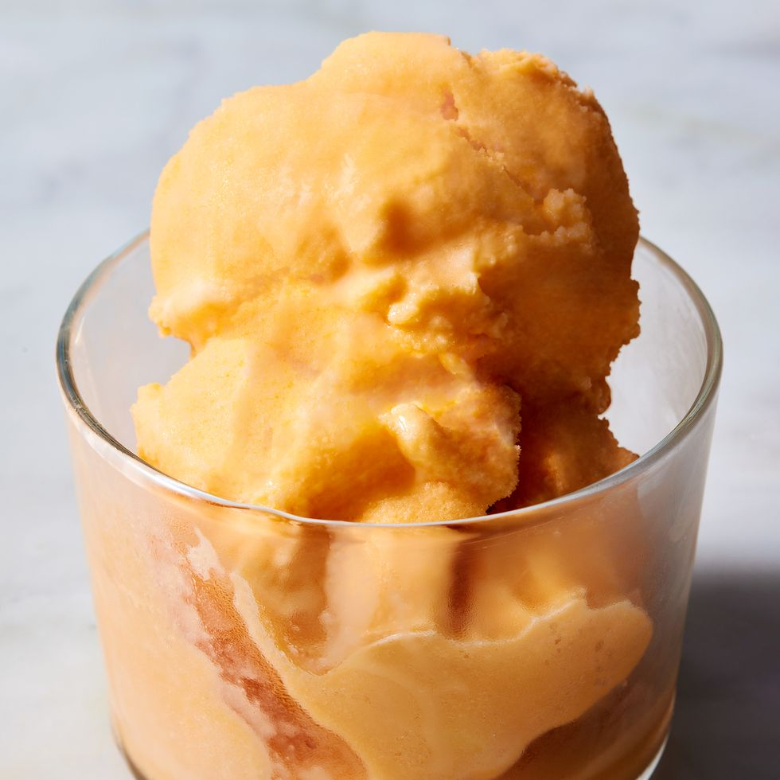

Orange Sherbert
If sorbet and ice cream had a love affair, it would be sherbet. What once started as a chilled fruit drink in India called sharbat, sherbet has morphed into a delectable frozen dessert with, admittedly, a bit of a naming crisis: You’ve probably heard it called both sher-bert and sher-bet. Fun fact—both ways are technically correct! Sherbet is more common, but you do you. No matter how you say it, this is your sign to make it home. All you need are 5 ingredients and a few hours for this Creamsicle-inspired version. Top it with whipped cream for the perfect light and refreshing summer dessert.
Ingredients
- 1 1/3 c. fresh orange juice (from about 4 navel oranges), strained
- 1 c. orange juice concentrate
- 3/4 c. evaporated milk
- 2 tbsp. condensed milk
- 1/2 tsp. kosher salt
Directions
- Freeze bowl of ice cream maker according to manufacturer's directions.
- Meanwhile, in a medium bowl, mix orange juice, orange juice concentrate, evaporated milk, condensed milk, and salt. Refrigerate until cold, 30 to 40 minutes.
- Pour orange juice mixture into chilled ice cream bowl and turn on to mix until sherbet begins to freeze and turn light orange in color and the consistency is like icy soft serve, about 30 minutes.
- Transfer sherbet to a freezer-proof container, such as an 8 1/2"x4 1/2" loaf pan. Freeze at least 2 hours or up to 1 month.